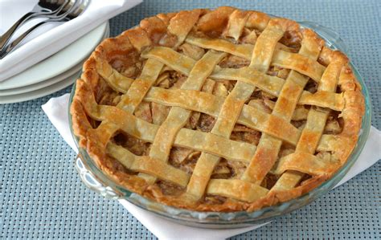

Apple Pie

Description:
No American recipe book is complete without Apple Pie. This classic dessert is a staple, and is one of my
favorite things to bring to a party because, in my opinion, it's good hot, cold, and even room temperature. An
apple pie is also stellar because with a bit of extra dough for shaping, you can easily have the fanciest
pie at the party. I included just a standard upper pie crust design in this recipe, but feel free to get as
fancy as you'd
like with designs.
As far as ingredients go, the original recipe included homemade pie dough, but I find store bought works
perfectly well. Saves a bit of extra time as well. I also always go for Granny Smith apples - they are more
tart
in flavor and so are a good balance to all the cinnamon, sugar, and butter added to the filling.
Ingredients:
- Pre-Made pie crust
- 2 1/2 pounds (about 6) apples, peeled, cored, sliced
- 2/3 cup granulated sugar
- 1 teaspoon cinnamon
- 1/8 teaspoon ground clove
- 1 tablespoon fresh lemon juice
- 1/2 teaspoon freshly grated lemon zest
- 3 tablespoons unsalted butter, diced
- 3 tablespoons all-purpose flour
- egg wash: beat 1 egg with 1 teaspoon water
Steps:
- Preheat oven to 375.
- In a bowl combine apples, sugar, cinnamon, cloves, lemon juice, zest, butter, flour. Let stand 10 minutes.
- Roll out 1/2 of dough until 1/8 inch thick and fit into 9 inch pie plate. Trim off edge, but leave about
1/2 inch overhang.
- Mound apple mixture into shell.
- Roll out remaining dough until 1/8 inch thick and drape over filling. Trim excess, leaving inch long
overhang.
- Fold overhangs together and crimp edges with tines of a fork. Brush crust with egg wash and cut slits in
top for steam vents.
- Bake for 1 hour. If needed, wrap the edges of the crust so it doesn't overcook.
- Cool pie and serve. Goes best with vanilla ice cream on the side.